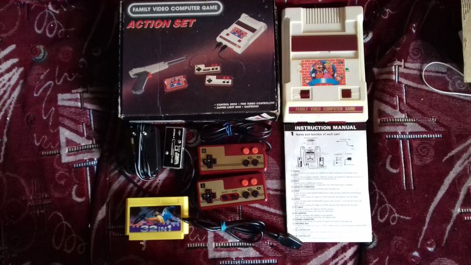

| Произведён | Судя по маркировке микросхем не раньше 24-31 декабря 1991 года |
| Процессор | GM-6827( аналог MOS-6502 ) |
| Зеленит | Нет |
| Встроенные игры | Нету, но существуют следующие модели, где были. На этом клоне есть нераспаянный второй слот под 60 пинов, однако он не используется |
| Количество слотов для картриджей | 2( но 1 теневой и не используется ) |
| Стандарт картриджа | Японский Famicom 60 пинов |
| Звуковой процессор | Нормальный |
| Количество пинов геймпадов | 9 |
| АВ-выход | Работает |
| Антенный выход | Работает |
Family Video Computer Game Acton Set
Family Video Computer Game Action Set - клон Nintendo Family Computer, произведенный неизвестной компанией, производился скорее всего в Китае, примерно с конца 1980-ых годов. Чаще всего приставки этого вида встречались в Южной Америке. Доподлинно известно что продавались в Аргентине.
Это один из самых интересных фамиклонов что у меня есть. Начнём с истории
Был куплен в городе Санкт-Петербург весной 2019 года на Ленинском Проспекте. Цена покупки была смешная - 1000 рублей. При этом был практически полный комплект.
Человек который её продал рассказал мне, что эта приставка была привезена в самом начале 90-ых годов по военной линии из Германии. Скорее всего имелась в виду Западная Группа Войск, ранее имевшаяся в бывшей ГДР, но после объединения Германии войска оставались там до 1994 года.
По его словам, таких приставок было привезено около 100 штук, и как было мне сказано у них у всех не работал звук, и человек продавший мне данную приставку сказал что он лично такие ремонтировал. Думаю что он говорил правду, потому как на вид человеку было лет 50-55. В дальнейшем, когда я раскручивал данную приставку - там действительно имелись следы сторонней пайки, поэтому я думаю что то что мне рассказали это правда.
Дальше больше, рассказ также содержал в себе упоминание о том, что приставки кустарным способом переделывались из PAL в отечественный SECAM. Может быть оно так и было, но на моем конкретно образце переделки не было и приставка работает в PAL-режиме. По части внутреннего железа тоже надо будет поговорить, но чуть позже. А сейчас скажу так, приставка долгое время хранилась у продавца, и по сути она сохранилась в очень хорошем состоянии, правда немного начала желтеть. Но это не было редкостью для обычного Famicom, так что удивляться не приходится.
Комплектация была очень неплохая, но все таки не совсем полная и оригинальная.
В комплект, помимо коробки входили:
Непосредственно консоль
Два геймпада с турбо кнопками
Антенный переключатель
Блок питания на 9 Вольт
Картридж от Стиплера 32 в 1
Мануал
Консоль непосредственно копирует собой оригинальный дизайн Family Computer, что отличает его от оригинального это следующие детали - отсутствие рычага для выбрасывания картриджей, дополнительные 9-штырьковые два разъема для геймпадов, доработка консоли для вывода AV-видеосигнала.
Внутри у консоли имеется не распаянный второй слот, который в следующих моделях использовался в качестве подключения к нему платы с игрой, и таким образом консоль имела встроенные игры.
В консоли используются следующие микросхемы:
Микросхемы оперативной памяти представлены двумя чипами фирмы GoldStar GM-76C28-10, судя по всему производства Южной Кореи. Микросхемы выпущены не раньше 24-31 декабря 1991 года, если судить по маркировке.
Для видеопроцессора здесь использована микросхема GM-6838, к сожалению узнать производителя так и не получилось. Маркировка говорит о том, что она выпущена примерно 26 июня 1991 года.
А в качестве Центрального Процессора здесь используется микросхема GM-6827, той же фирмы что и прошлая и датируется тем же числом.
Надо заметить, что приставка использует хорошего качества пластик, лишь немного уступающий подлинному Фамикому.
Геймпады тоже почти полностью копируют оригинальные, лишь турбо кнопки добавлены красного цвета, и нету никаких обозначений на них, будто бы их доделывали в последнюю очередь. Качество пластика на геймпадах тоже достаточно на высоком уровне. На втором гемпаде нету кнопок Селект и Старт, и микрофона там тоже нет.
Имелся антенный переключатель, стандартный для подобных клонов того времени.
Блок питания на 9 вольт 850 мА - с классической распайкой - где плюс снаружи, а минус внутри.
Имелся также Мануал, который очень похоже что был скопирован с оригинального с переводом на английский язык. О чем свидетельствуют слова Family Computer и аббревиатуры типа HVC-001, и рисунки изображенные там, также немного подверглись изменению.
В комплекте не было пистолета, которым судя по коробке должна была быть копия Zapper`а.
Не было и комплектующего картриджа, которым должен был быть картридж с наклейкой от Super Mario Bros 2 Lost Levels. Вряд ли там была именно эта игра, вероятнее всего это была многоигровка с простыми играми.
С этим комплектом шла многоигровка 32в1, которая была куплена в магазине фирмы Денди( Стиплер ) и имела у себя 8 простейших игр.
Приставка спокойно работала как по антенному подключению, так и по AV. Звук работал, но он отличался по качеству и от фамиклонов с удешевлённым звуком и от клонов с нормальным звуком, что было достаточно необычно и странно.
Одним словом, данная вещь крайне интересна оказалась, несмотря на то, что внешне ничем сильно не примечательная.
Саму статью в дополненном виде и с дополнительными фото можно посмотреть вот тут:
https://superbrain1997.blogspot.com/2019/07/family-video-computer-game-action-set.html
Автор данной статьи до написания данного текста сделал видеообзор данной приставочки, который можно посмотреть здесь:
https://www.youtube.com/watch?v=ZXCdtKoS7MY